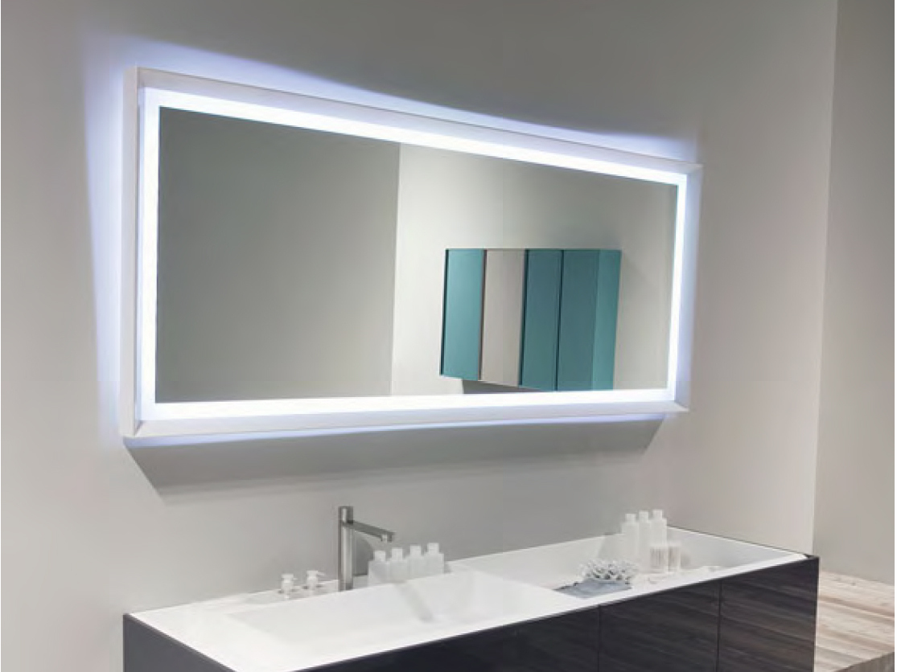
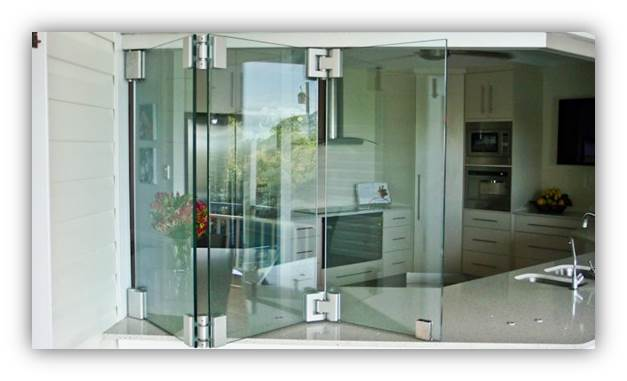

Kaca merupakan salah satu material rumah yang pasti senantiasa ada, utamanya sebagai jendela. Kaca kian melengkapi bangunan supaya menonjol lebih indah dan memiliki skor estetika kalau di pandang orang. Kaca juga berfungsi sebagai daerah keluar masuknya cahaya sang surya pada sebuah bangunan. Karenanya dari itu, benda ini cukup penting diterapkan pada sebuah bangunana.
Tak kaca tempered, kaca shower, kanopi kaca, parket kayu jati dan masih banyak lagi. Tidak cuma material kaca kini juga terdapat material kayu atau parket lantai kayu jati.
Distributor & Supplier Partisi Kaca di Tanjungbalai
Partisi kaca tidak lagi dianggap sebagai hal yang aneh lagi. banyak properti yang bahan berupa kaca sebagai partisi. Anda bisa lihat di pusat perbelanjaan modern, hotel, dan juga perkantoran. ini dilakukan menghemat bangunan. Belum lagi tarif untuk tukang yang bisa lebih banyak ketimbang tarif pembelian bahan bangunan. Anda mendapatkan partisi kaca Tanjungbalai yang anda inginkan di dis.or.id. Anda mesti tahu ada kaca transparan, semi transparan dan kaca yang sama sekali tak transparan yang acap kali disebut dengan kaca cermin. Sekiranya anda sedang mencari distributor dan supplier partisi kaca yang memiliki kaca dengan mutu terbaik, anda tinggal mengunjungi dis.or.id.
Info Pemesanan Selengkapnaya
Google Maps: https://www.google.com/maps/d/viewer?mid=1R8kzChlMY2QK17rdE2QwzgHqdyqkVgbb&ll=-7.27380280025364%2C112.65243155000007&z=18
Note: https://www.facebook.com/notes/distributor-of-industrial-supply/pabrik-supplier-partisi-kaca-kamar-mandi-kantor-r-tamu-dlsb/1785723915060821/
Event: https://www.facebook.com/events/538733799826380/
Distributor & Supplier Kaca Shower
Pintu Kaca Shower pada kamar mandi merupakan salah satu pilihan yang baik untuk desain interior kamar mandi modern. Dengan menerapkan kaca shower pastinya kamar mandi yang dimiliki akan lebih kelihatan mewah dan menjadi sekat antara zona basah dan area kering. Tak ingin lebih total lagi, kamar mandi yang memakai shower ini bisa dilengkapi dengan bagian lain adalah shower screen atau bisa disebut dengan kaca shower. Pelaksanaan ini memang desain shower berbahan kaca memang lebih banyak dipakai daripada desain shower berbahan tirai. Jika pemasangannya juga betul-betul gampang dikerjakan dan tidak memerlukan waktu yang lama. Selain ini akan berdampak terhadap tarif yang akan dikeluarkan untuk membayar tukang. Kita tidak perlu repot lagi mencari tukang sendiri karena pemasangan alat sekat ini memang membutuhkan teknik tersendiri.
Tak anda sedang memerlukan kaca shower untuk kamar mandi anda, anda bisa segera mengunjungi dis.or.id. Disana anda dapat menerima kaca shower yang pastinya cocok untuk kamar mandi anda. Tidak terbaik dan harga relatif murah. Anda bisa buktikan sendiri.
Distributor, Supplier & Jasa Pasang Kanopi Kaca
Pintu Kaca Shower pada kamar mandi adalah salah satu pilihan yang baik untuk desain interior kamar mandi modern. Diantaraya merupakan kaca tempered 8 mm, kaca tempered 10 mm clear, kaca tempered 12 mm clear, kaca laminated 12 mm clear, kaca laminated 5 mm + 5 mm clear non tempered kaca, kaca laminated 5 mm + 5 mm tempered clear dan masih banyak lagi. Harga dari setiap kaca yang ditawarkan cukup pelbagai tergantung kaca yang nanti akan diaplikasikan. Ada banyak pilihan varian desain. Seandainya tembus pandang, kaca meresap cahaya yang masuk sehingga kian tebal kaca karenanya semakin sedikit sinar yang bisa melewatinya, karenanya sifat transparannya makin berkurang.|Di samping pintu kaca shower akan membikin kamar mandi kecil nampak lebih besar.
Seiring dengan perkembangan dunia properti, sekarang kanopi kaca tempered sudah berkembang pesat mengikuti arsitektur modern. Dis.or.id juga menyediakan jasa pemasangan kanopi kaca yang tentunya dengan bantuan daya professional yang telah berpengalaman. Tidak anda sedang mencari kanopi kaca, anda dapat segera mengunjungi dis.or.id.
Jasa Maintenance Kaca

Jasa maintenance kaca yakni perusahaan yang akan menolong supaya gedung perkantoran Anda menonjol seperti baru. Kaca sangat membutuhkan perawatan sebab tiap hari terkena sinar matahari atau juga hujan. Selain hanya membersihkan kaca, jasa maintenance kaca juga dapat menjalankan koreksi. Membersihkan bagian kaca gedung Anda yang mungkin rusak, pecah, atau mengalami permasalahan lainnya.
Lebih dari itu, Sekiranya pakar yang dimilik oleh dis.or.id juga bisa memperbaiki kaca yang rusak.
Dis.or.id memahami kian banyak gedung pencakar langit dengan betuk yang berbeda-beda. Disana anda bisa memanfaatkan jasa maintenance kaca dengan daya pakar yang mampu membersihkan gedung kaca dengan produk pembersih kaca apa yang terbaik untuk menghilangkan kotoran dan kusam. Dis.or.id juga sudah mempersiapkan dengan pelbagai alat yang dapat dipakai untuk menjangkau seluruh sudut gedung, sekalipun gedung Anda benar-benar tinggi. Oleh karena itu, dis.or.id cuma memilih orang-orang yang betul-betul profesional dan sudah memiliki pengalaman dalam hal maintenance kaca. Selain cuma dalam hal membersihkan kaca, mereka juga sanggup mengerjakan koreksi serta penggantian kaca yang mengalami kerusakan.
Jasa Pemasangan Kaca Tempered
Kaca Tempered yakni salah satu variasi kaca dari sekian banyak tipe kaca yang sering diterapkan untuk jendela, pintu, dan partisi. Disana anda dapat memanfaatkan jasa maintenance kaca dengan kekuatan ahli yang cakap membersihkan gedung kaca dengan produk pembersih kaca apa yang terbaik untuk menghilangkan kotoran dan kusam. Sementara itu, untuk rumah hunian, komponen dari rumah seperti kamar mandi serta kanopi umumnya terbuat dari kaca tempered. Untuk gedung perkantoran, bagian yang paling acap kali dihasilkan dengan bahan yang satu ini yakni jendela dan pintu. Selain ini tak lain sebab semakin banyak orang yang memahami kwalitas serta keunggulan dari kaca tempered ini.
Untuk itu, dis.or.id hadir sebagai penyedia jasa pemasangan kaca tempered yang telah berpengalaman. Tidak anda tertarik untuk memasang kaca temeperd, anda cuma tinggal mengunjungi situs dis.or.id. Bukan sembarang alat yang diaplikasikan untuk memotong kaca tempered pantas dengan kebutuhan. Tidak saat ini anda sedang berkeinginan membangun suatu bangunan atau gedung, anda dapat memanfaatkan kaca tempered untuk diterapkan segera ke seluruh tipe bidang. Dis.or.id menawarkan jasa pemasangan kaca tempered karena kami memiliki alat yang komplit. Lebih dari itu, dis.or.id telah menyiapkan tenaga spesialis yang siap untuk melakukan pemasangan, entah itu kaca tempered untuk kanopi, pintu, partisi, balkon, dan lain sebagainya.
Distributor & Supplier Pintu Kaca
Tidak cuma di gedung atau perkantoran, melainkan pntu kaca juga bisa anda aplikasikan pada rumah agar sinar bisa lantas masuk pada ruangan dan memberikan suasana hangat. Tersedia juga almunium dan kayu jikalau Anda berharap mempunyai pintu kaca dengan frame. Mengenai modelnya, Anda dapat putuskan apakah berharap mempunyai pintu kaca desain lipat, geser, atau model yang lain. Anda tinggal tentukan saja figur pintu kaca seperti apa yang mau Anda miliki.
Anda dapat memiliki pintu kaca unggulan anda sekarang juga dengan mengunjungi dis.or.id. Disana terdapat beragam tipe pintu kaca yang dapat anda jadikan opsi.
Terdapat juga opsi lain berapa kaca non-tempered yang harganya relatif lebih murah.
Jual Kaca Cermin

Kaca cermin ataupun kaca reflektif ialah variasi kaca yang bisa memantulkan cahaya dan mereduksi sifat tembus pandang dari sisi luar, sehingga sering pula disebut dengan kaca one way. Ini tidak cuma sebagai kaca cermin persegi. Ada banyak sekali desain cermin yang bisa Anda pilih. Untuk bangunan bertingakat, secara khusus diterapkan pada variasi dinding kaca. Ada cermin persegi yang direkatkan beraturan, cermin berbentuk seperti daun, dan lain sebagainya. Jadi, hanya nampak transparan dari satu sisi saja. Tak saja, memang kesan minimalis terlihat dari cermin dengan bentuk persegi atau persegi panjang. Kini perlu diamati juga yaitu apakah Anda berharap memiliki kaca cermin desain minimalis atau yang elegan.
Dis.or.id yaitu penyedia beragam ukuran kaca cermin yang bisa anda aplikasikan ke gedung, kantor maupun rumah anda. Tidak cuma itu, harga yang di tawarkan sangatlah relatif murah dengan mutu dan juga mutu terbaik. Atau Anda bisa memilih cermin yang dibangkai dengan beragam tipe bahan seperti kayu, aluminum, plastik, dan bahan lainnya. Maka cuma persegi atau persegi panjang. Anda bisa menambahkan frame atau tanpa frame sesuai dengan kesukaan Anda. Jadi, orang di luar tak bisa memandang Anda berada di dalam. Tapi, Anda bisa melihat orang lain dari dalam rumah. Dis.or.id menyediakan kaca cermin yang bisa anda beli dengan harga yang amat murah dan dengan kualitas terbaik. Tidak anda tertarik untuk memiliki kaca cermin bagus sebagai pemanis ruangan atau sebagai pintu, anda dapat segera mengunjungi dis.or.id. Disana anda dapat menerima kaca cermin yang sesuai dengan keinginan anda.
Jasa Pemasangan Railing Kaca
Kini railing kaca sekarang kian populer. Tak Anda berharap mempunyai rumah dengan desain interior minimalis, betul-betul tepat saat bagian tangga dan juga balkon menerapkan railing kaca ini. Pun juga komponen pegangan atau framenya. Maka dari itu, para produsen berupaya untuk menghasilkan railing yang terbuat dari kaca dengan teladan yang berbeda-beda. Namun kaca pecah, kaca tempered tak akan melukai orang yang terkena kaca tempered hal yang demikian lantaran pecahan demikian itu kecil dan lembut, tidak berupa kepingan yang runcing.
Ada banyak pilihan macam kaca yang dapat dipakai. Tak ini tidak cuma ditetapkan oleh ketebalan atau harga tapi juga oleh ragam. Ini jenis kaca yang amat kuat. Kaca ini sungguh-sungguh kuat dan juga aman. Dengan demikian, pecahan tak akan melukai siapapun. Sekiranya juga dengan railing. Ini memastikan kuatnya konstruksi railing kaca. Pastikan juga aluminum ini betul-betul bagus dan kuat.
Bagi anda yang sedang mencari railing kaca dengan kualitas terbaik, anda dapat langsung kunjungi dis.or.id. ukuran dan ketebalan railing kaca telah tersedia.
Distributor & Supplier Pintu Lipat Kaca

Kaca tempered juga dapat diterapkan untuk pintu lipat kaca. Jadi, bahan ini tidak hanya untuk pintu saja. Pada kenyataannya, harga kaca tempered ini tak terlalu mahal. Mak dari itu, kaca ini ditawarkan dengan harga yang cukup dan relatif murah. Memang diperbandingkan dengan macam kaca lainnya, harganya lebih mahal. Akan namun, terpautnya tak terlalu signifikan.
Timbul pertanyaan mengapa Sepatutnya memakai kaca tempered. Pastikan Anda memilih kaca tempered mutu terbaik supaya pintu lipat yang Anda pesan bisa diaplikasikan dalam kurun waktu yang betul-betul lama. Kini, banyak kantor yang tidak lagi memiliki ruangan yang disekat dengan tembok dan ketika ini beralih dengan ruangan disekat dengan mengaplikasikan kaca.
Jasa Pemasangan Kubikel Toilet

Dahulu, kamar mandi hanya disekat oleh penyekat yang berbahan kayu, jarang sekali yang mengaplikasikan bahan lain. Kubikel WC bisa di pakai di WC mall.
Anda juga dapat membuat kamar mandi di space yang lebih kecil dan tidak membutuhkan lahan yang demikian itu besar untuk membikin kamar kecil yang banyak. Kubikel toilet atau kubikel kamar mandi ini lebih murah di banding dengan pembuatan kamar mandi atau kamar mandi konvensional. Jikalau anda tertarik untuk mempunyai kubikel toilet, anda bisa segera mengunjungi dis.or.id.
Seandainya anda ingin mempunyai kubikel kamar kecil ini, anda dapat mengunjungi situs dis.or.id.
Melainkan penggunaan kaca di kamar mandi bisa jadi keadaan sulit saat Anda meletakkannya dengan salah. Seandainya anda saat ini sedang memerlukan kaca shower untuk kamar mandi, langsung saja kunjungi dis.or.id untuk melakukakn pemesanan ataupun menanyakan terperinci harga dari kaca shower.